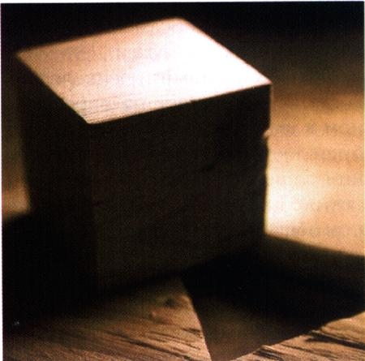

О себе:
ПНПУ им. К.Д.Ушинского
факультет социально-гуманитарный
специальность "Психология"
Диплом університету ім.К.Д.Ушинського
ПНПУ им. К.Д.Ушинского
факультет социально-гуманитарный
специальность "Психология"
Услуги:
- Очная встреча, а также сессия по Skype.
Индивидуальная консультация длится 50 минут.
Консультации онлайн я предлагаю для тех, кто по каким-то причинам не в состоянии прийти в кабинет или живет за пределами г.Одесса - 1200 грн.
(для Украины);
$50 USD
(для стран СНГ);
$60 USD
(для западных стран).
- Очная или Skype встреча с супружеской парой, 60 минут - от 2000 грн.
(для Украины);
$90 USD
(для стран СНГ);
$110 USD
(для западных стран).
- Участие в психотерапевтической группе (одно посещение, длительность 3 часа) - 900 грн.
Вам понадобится помощь психолога, если вы оказались в таких ситуациях как:
- Запутались в потоке жизненных проблем;
- Не можите разобраться в себе;
- Не можете ощутить радость жизни;
- Возникли проблемные отношения с членами семьи...
- Психология
- Наука, изучающая процессы и закономерности психической деятельности.
- Семейная психология
- Это раздел психологии, который изучает сущность и эволюцию семейных отношений, особенности их возникновения, становление, стабилизацию и распад, а также ряд других моментов, связанных с семьей и семейной жизнью.
- Психология семьи
- Это чрезвычайно важный для большинства людей раздел психологии, ибо семья для многих из нас является одной из базовых ценностей, от которой зависит наше счастье.
Пример действует сильнее угрозы. © Пьер Корнель
Иногда удается спросить себя, только когда спросишь другого. © Эрих М.Ремарк

Телефон горячей линии +380934118250 E-mail sofigaidamaka@gmail.com